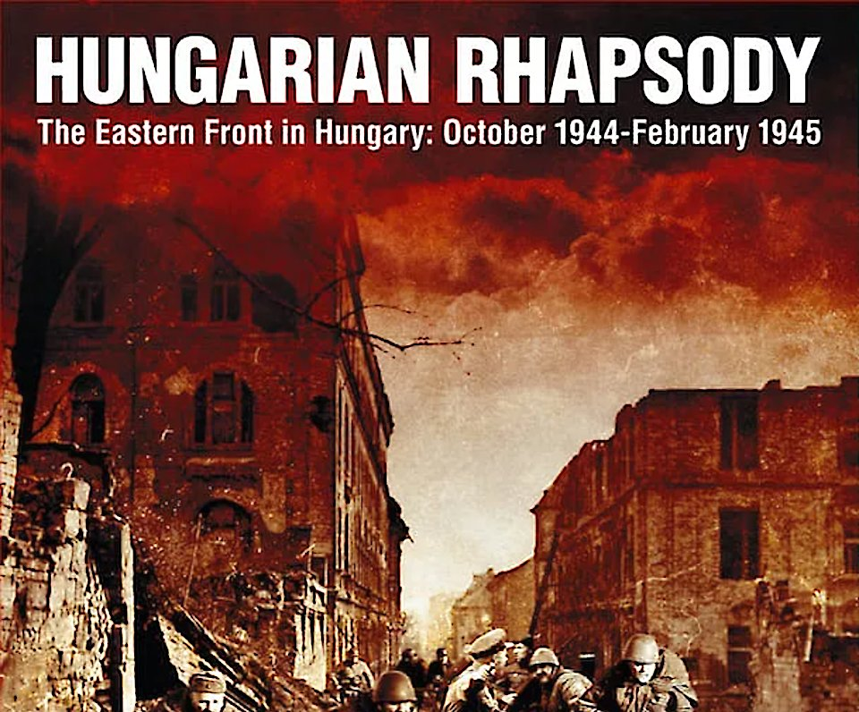

При всей очевидности идеи, ни разу в истории хобби не был издана игра с возможностью розыгрыша многочисленных сценариев гипотетического конфликта на одной и той же карте, но в разные стартовые даты, которая бы учитывала изменение состава войск и модернизацию вооружения противоборствующих сторон, позволяла бы взглянуть на эволюцию противостояния в рамках пресловутой «Гонки вооружений». Ведь на протяжении всей Холодной войны мир не раз оказывался на грани начала вооруженного конфликта сверхдержав.
Элементарно! Многочисленные варгеймы посвящены конфликту, стартующему с линии границы ФРГ и ГДР, но никто так и не догадался сделать варгейм, позволяющий игрокам, начинать игру в разные исторические даты, когда Холодная война рисковала перейти в «горячую» стадию. А ведь большая часть этих игр географически происходила на карте одного и того же региона.
Карл Фунг, автор игры с красивейшим названием «Железный занавес» (и красивейшей, зловещей обложкой, за дизайн которой отвечал Николас Эскуби):
- не только проделал титаническую работу по воссозданию боевого расписания сторон (сухопутных войск и ВВС) разных лет (в игре сценарии рассматривающие возможность войны в 1945, 1962, 1976, 1983 и 1989 годах)
- дал сценариям поэтичные названия, использовав названия популярных песен соответствующей эпохи
- снабдил все сценарии любопытнейшими комментариями о причинах и предпосылках гипотетического конфликта
- но и включил в состав сценариев совсем уж необычные, посвященные возможной атаке НАТО на страны Варшавского договора с целью раз и навсегда покончить с коммунистической угрозой. (Три сценария из восьми посвящены атаке «капиталистов», начиная с «Операции «Немыслимое» в 1945 году, и заканчивая попыткой «ускорить Перестройку» в 1989 году)
И это еще не все!
Наверное, главной фишкой игры Iron Curtain (наряду с включением в игру серии SCS достаточно подробных правил, касающихся войны в воздухе) является использование уникальной механики развертывания войск обеих сторон прямо «из казарм», путем включения в каждую партию предварительной стадии, состоящей из неопределенного числа подготовительных ходов (Run Up turns). Имеется в виду, что период нарастания напряженности (переход из фазы «Спокойствие, это всего лишь учения!» в стадию «Внимание! Боевая тревога! Это не учения! Повторяю это не учения») может произойти совершенно внезапно, и непонятно, какая из сторон окажется застигнутой врасплох. И лишь по завершении стадии Run Up в силу вступает стандартная последовательность игры серии SCS. Таким образом каждый раз игроки получают новую неповторимую изначальную расстановку в каждом сценарии! Игра таит в себе просто фантастические возможности по повторному розыгрышу сценариев.